Here is a sermon by C.H. Spurgeon that I keep coming back to: Cheer Up, My Comrades! (Sermon #1513), preached on 2 Chronicles 35:2.
I am hesitant to say too much because Spurgeon is the master in teaching God’s Word with such clarity. So I will try to say as little as possible and use graphics to augment his words.
The reason I keep coming back to this sermon is that it is simply him encouraging six distinct groups within the church who feel disheartened in their service to God. I am sad to say that I have been in every group at one time or another. Sometimes in more than one. Sometimes in all of them. I am certainly in the first group right now:
- Those who think they can do nothing
- Workers who feel laid aside
- Those with small talent
- Workers facing great difficulties
- Those who are not appreciated
- Those discouraged by a lack of visible success
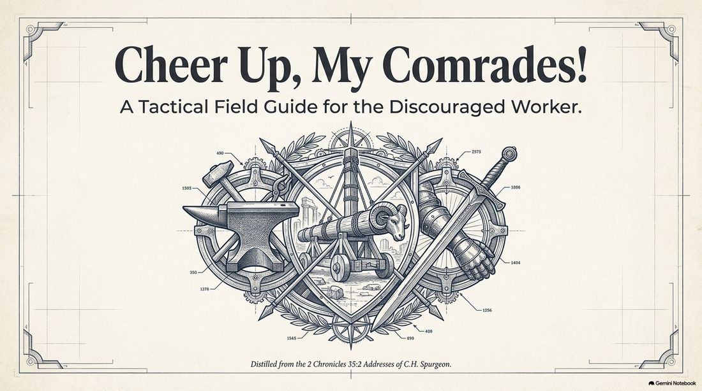
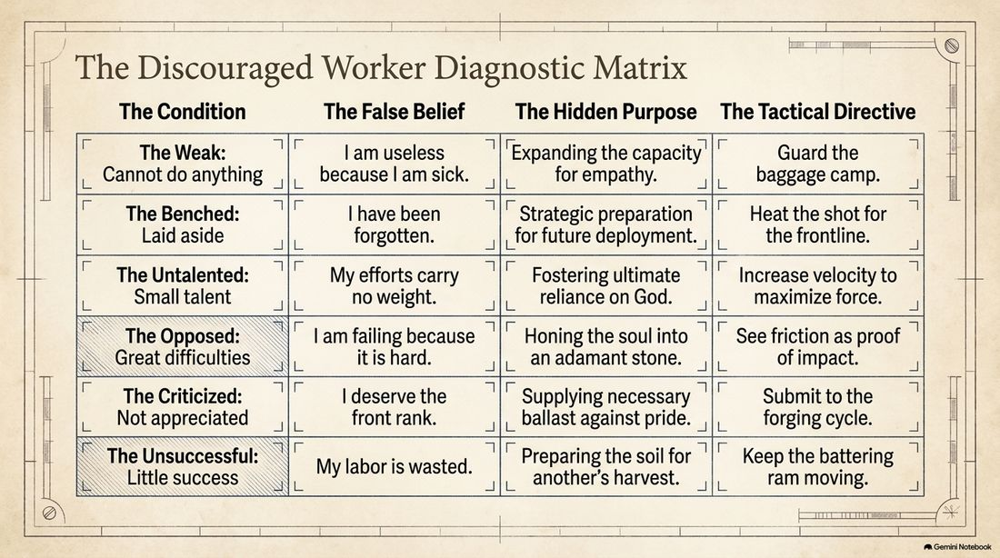
For the complete overview, here is a Mind Map of the sermon. And if I made just a simple blog post of it, it would be this:
The Law of the Baggage: why your “invisible” work matters more than you think
In our hyper-visible digital age, we are navigating an epidemic of perceived insignificance. We have been conditioned to measure our worth by the altitude of our stage or the viral reach of our “wins.” When our efforts fail to yield immediate, public, or quantifiable results, we don’t just feel unproductive — we feel invisible. We begin to view ourselves as the “benchwarmers” of the world, sidelined from the real action.
This psychological trap is not a modern invention, but its remedy requires the eye of a spiritual historian. In the 19th century, the master communicator Charles Spurgeon addressed this very discouragement by looking back even further — to the reign of King Josiah. Josiah was a specialist in organizational health; he understood that a grand restoration of a culture (or a Temple) requires more than high-level leadership. It requires getting every individual into their proper “charge” and, crucially, ensuring they possess a “good spirit” within that place. Spurgeon’s synthesis of these ancient narratives offers a profound life-hack for the soul: the most transformative work often happens where nobody is looking.
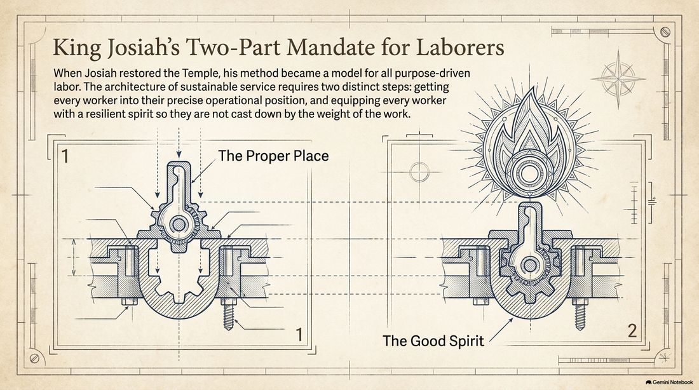
1. The Law of the Baggage: parity in the reward
One of the most liberating principles for the “sidelined” is a concept Spurgeon draws from the Law of David. This is not a mere suggestion of fairness; it is a fundamental law of the kingdom. During a military campaign, King David faced an internal rift: those who had fought in the heat of the fray did not want to share the spoils with those who, due to exhaustion or illness, had been left behind to guard the “stuff” — the baggage and supplies.
David’s response was a masterstroke of institutional justice. He established a constitutional parity between the front line and the support staff:
“As his part is that goes down to the battle, so shall his part be that tarries by the stuff — they shall share alike. And it was so from that day forward, that he made it a statute and an ordinance for Israel.” (1 Samuel 30:24–25)
In a results-driven world that only rewards the high-profile achiever, this is deeply counter-intuitive. It posits that the Divine economy does not prioritize the visible over the vital. If your heart is in the work, but your circumstances — be they age, infirmity, or domestic duty — keep you “at the camp,” you share equally in the ultimate victory. The reward is tethered to the intent and the faithfulness, not the optics.
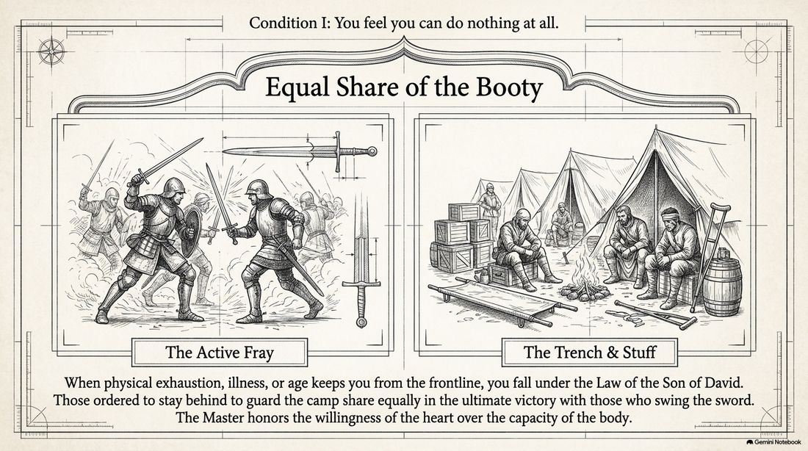
2. The psychological trap of “I can’t”
While there is immense grace for the sidelined, Spurgeon diagnoses a psychological trap that leads to spiritual atrophy. He suggests that the word “cannot” is frequently a mask for “will not” — a defensive shield we use to protect ourselves from the fear of failure or the effort of engagement.
He uses a visceral medical analogy: if a person, under the delusion that they are paralyzed, keeps their arm perfectly still for months, the muscles will eventually undergo a literal, physical stiffening. Through negligence, the pretense of powerlessness becomes a reality. This is the danger of spiritual rigidity. The remedy is not to wait for “great” strength to arrive, but to exercise the current, limited power you possess. Aptitude is a byproduct of employment; if you refuse to start small, you may eventually find yourself unable to start at all.
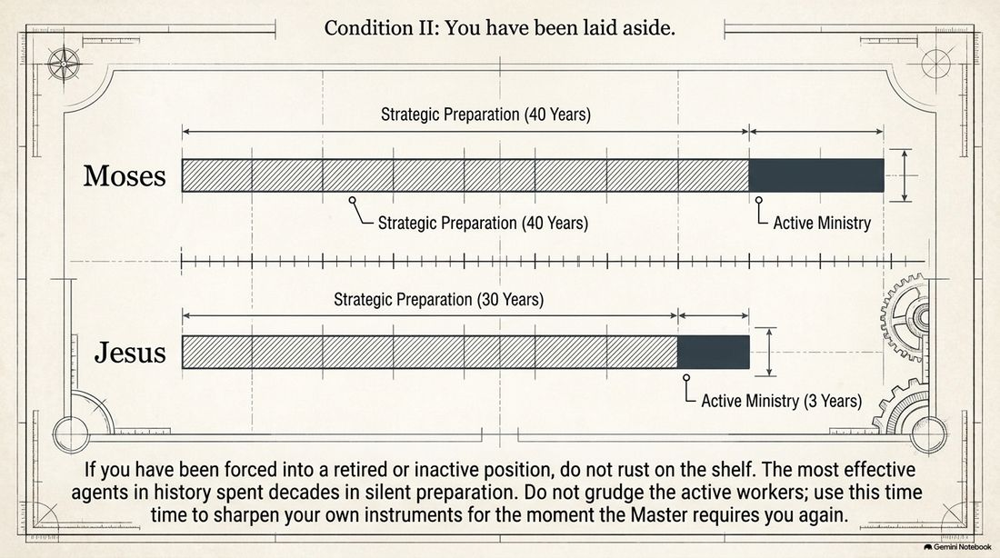
3. The hallowed ordinary: domestic life as divine service
We often create a false dichotomy between “secular” labor and “sacred” service. Spurgeon dismantles this by arguing that true religion is not a scheduled activity, but a quality of existence. He advocates for “hallowing common handicraft,” suggesting that when a soul is attuned to a higher purpose, the mundane is consecrated. He lists the specific, unglamorous tasks of his day that carry divine weight: nursing a child; sweeping a room; driving a nail; casting up a ledger.
The thesis is simple: let true religion be our life and then our life will be true religion. “Whether you eat or drink, or whatever you do, do all in the name of the Lord Jesus, giving thanks unto God and the Father by Him” (1 Corinthians 10:31; Colossians 3:17).
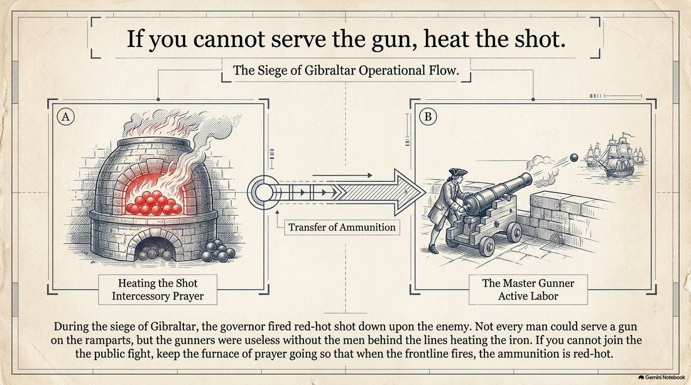
4. Angelic work: the specialized vocation of pain
If we accept that ordinary work is divine, we can then view our suffering as a specialized form of that work. There is a secret known only to those who have navigated the fire: pain qualifies you for a mission the healthy cannot fulfill.
Spurgeon notes the inherent clumsiness of those who have never suffered when they attempt to console the grieving. He describes them as being like “elephants picking up pins” — they have the strength, but they lack the delicate precision required for the task. They are “dreadfully awkward” in the face of sorrow. Conversely, the tried soul possesses an angelic efficacy. In the biblical hierarchy of service, a Prophet is often sent to warn or rebuke — but an Angel is sent to strengthen. When you use your own history of exhaustion or trial to speak a word in season to the weary, you are not “doing nothing.” You are performing angel’s work.
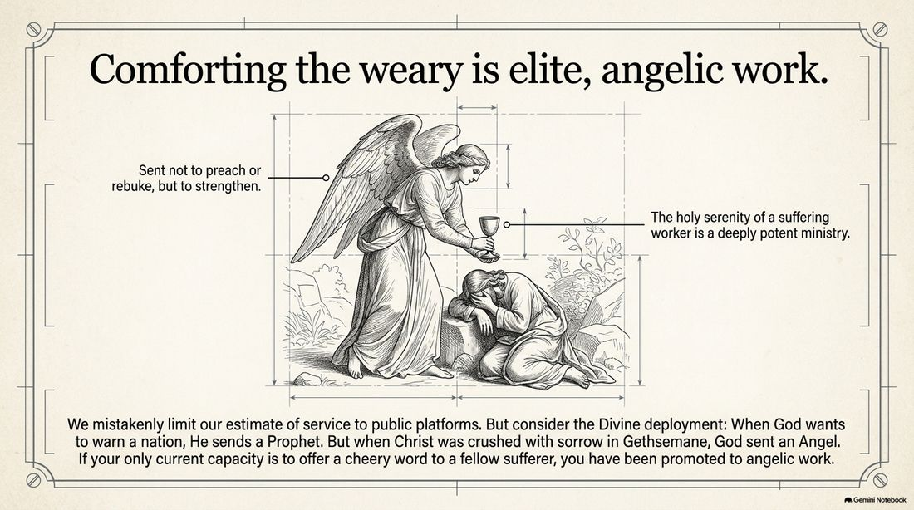
5. The nimble nine-pence: the math of velocity
For those who feel their talents are meager, Spurgeon offers a productivity hack centered on velocity rather than weight. He presents the analogy of the “nimble nine-pence” versus the “lazy crown.” A merchant with small capital can out-earn a wealthy competitor by turning over their inventory every single day. A nimble small coin in constant circulation achieves more profit than a large coin that sits stagnant in a vault. If you have only one talent, the temptation is to bury it in a napkin of self-pity. However, constant, small activity achieved through the Spirit can produce wonders that stagnant genius never will.
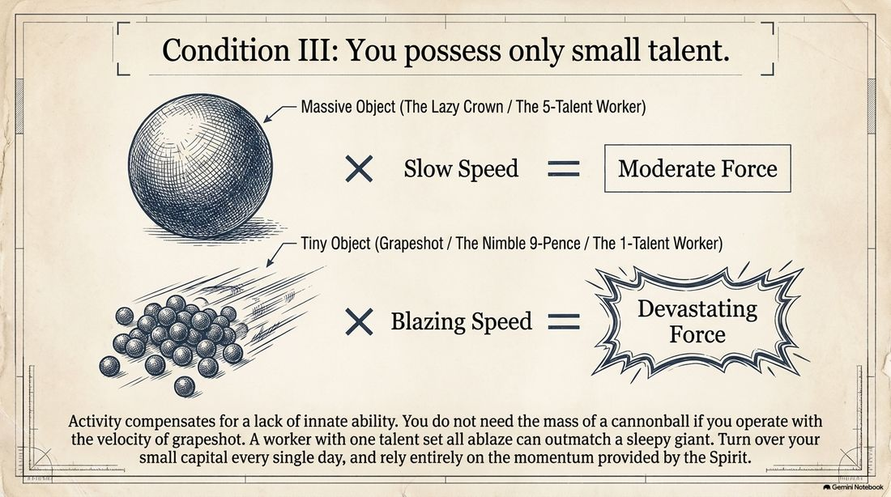
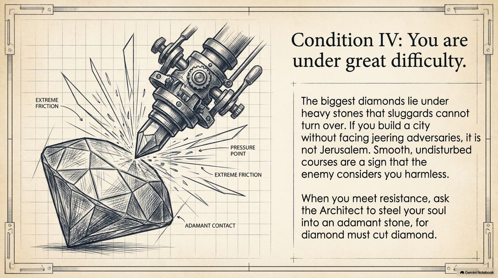
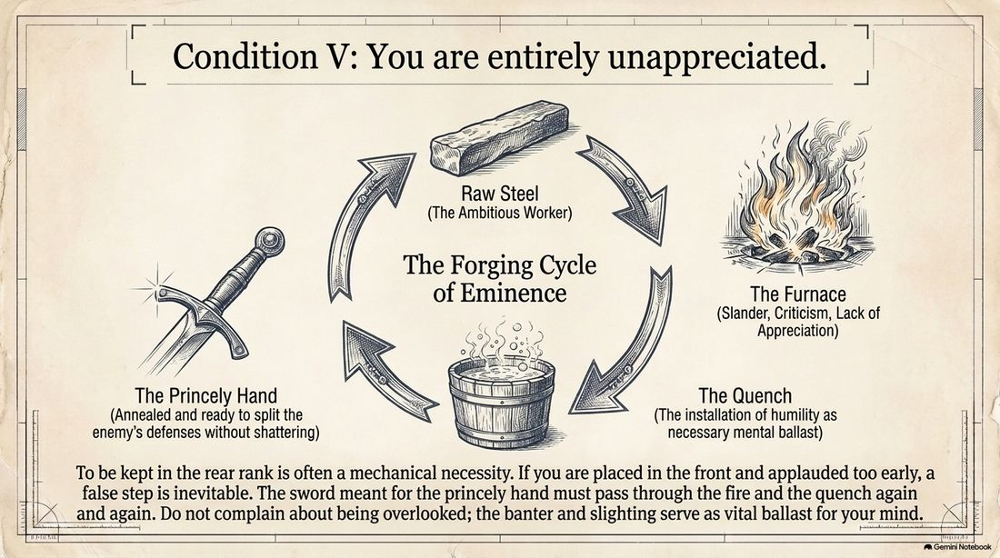
6. The battering ram: the science of cumulative victory
Our obsession with individual success often stems from a misunderstanding of how strongholds actually fall. Spurgeon cites a historical anecdote from Sir Christopher Wren’s demolition of the old walls of St. Paul’s Cathedral. The workmen used a Roman battering ram, striking the massive stones for days with no apparent effect. To the casual observer, it was a useless operation. Yet the architect knew better. Every blow was vibrating through the particles of the stone. When the wall finally crashed in one tremendous heap, the success belonged to the first person who struck it as much as the one who delivered the final hit.
In the Divine economy, if you are currently breaking up ground or plowing in obscurity, you are part of the vibration. You may not be the one standing on the loaded wagon during the harvest, but the final crash of the stronghold is the sum of every thud that came before.
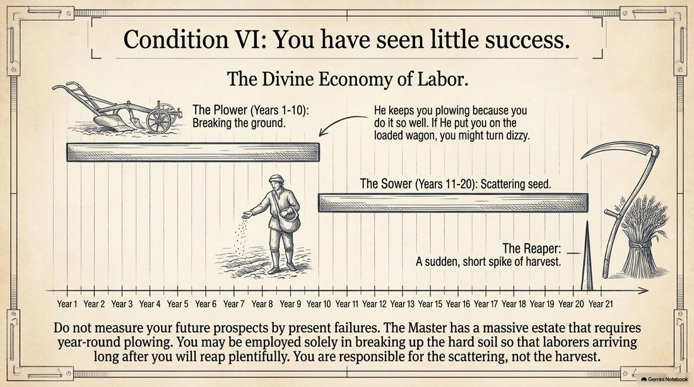
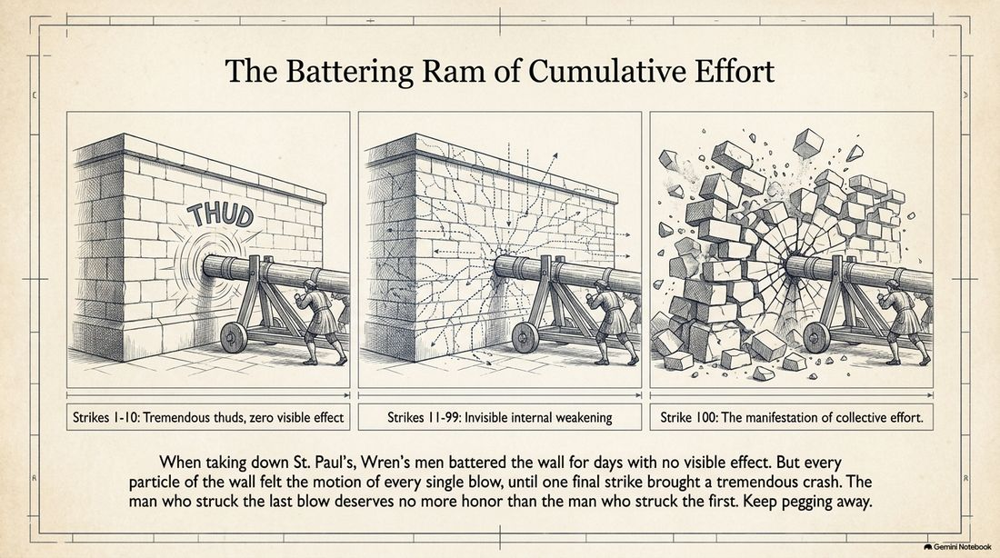
7. Conclusion: a masterclass in courage
Your life is a contribution to a narrative much larger than your own visibility. Spurgeon utilizes the imagery of an old log in a Master’s orchard. Though it may be past its season of bearing fruit, when it is finally cut down and burned, its fire warms the hearts of the rest of the family.
He recalls the young disciples in the era of the martyrs who would gather at Smithfield in the early morning to watch their pastors stand at the burning stake. They weren’t there for the spectacle; they were attending a masterclass in courage. When asked why they were there, they replied that they went “to learn the way” to live and die for their cause.
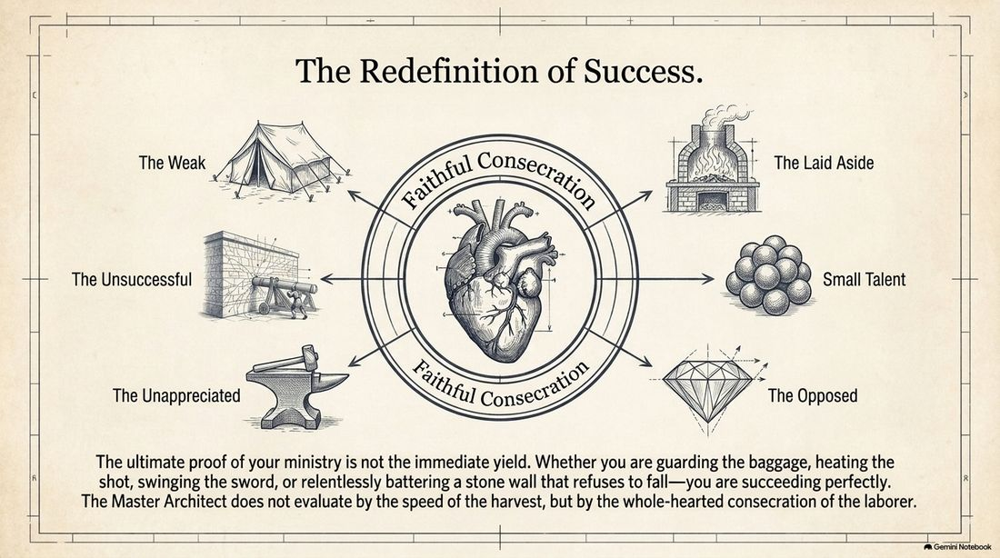
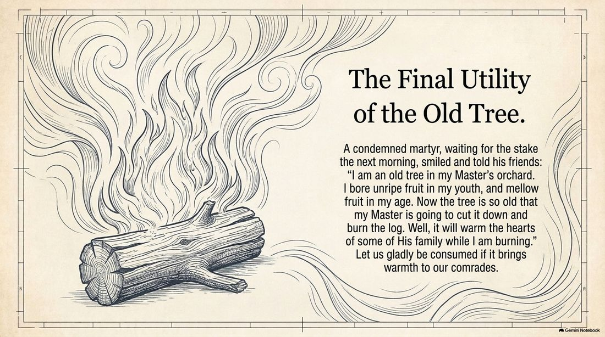
Every act of patient endurance and every quiet strike of your battering ram is establishing a legacy. It is teaching someone else “the way.” The question for you today is not whether you will receive the credit, but where you will choose to strike your blow.
If you knew your “invisible” strike was the one vibrating through the stone right now — would you strike with more force?
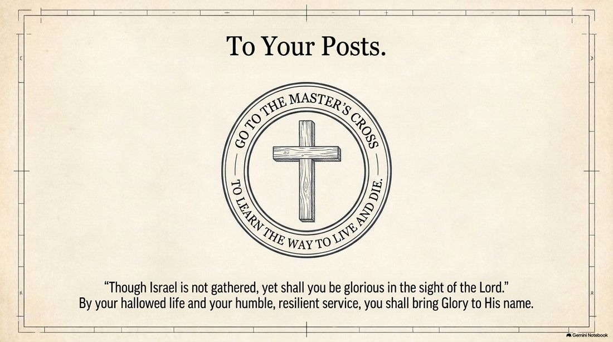
Comments